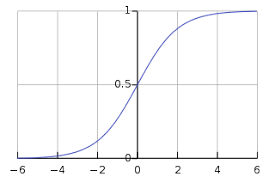

Sigmoid function
A sigmoid function, or S-function, is a mathematical function with an S-shaped graph. Here the sigmoid function is related to the special case of logistic function, which is described by the following equations.
`S(x)= 1/((1-e^(-x))) = e^(x) /(e^(x)+1)= 1-S(x)`
There are a number of common sigmoid functions, such as the logistic function, the hyperbolic tangent, and the arctangent. In machine learning, the term sigmoid function is normally used to refer specifically to the logistic function, also called the logistic sigmoid function. All sigmoid functions have the property that they map the entire number line into a small range such as between 0 and 1, or -1 and 1, so one use of a sigmoid function is to convert a real value into one that can be interpreted as a probability.
Sigmoid Curve